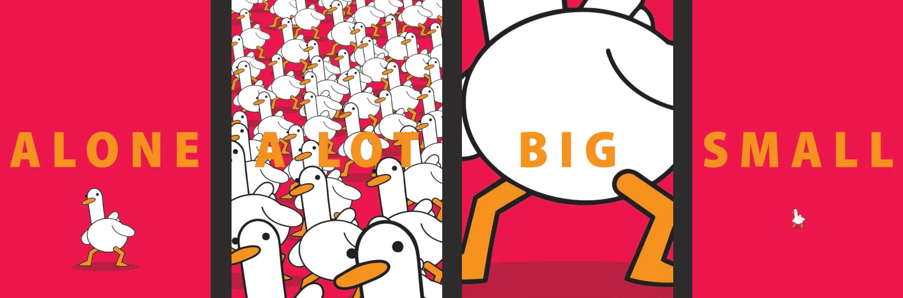
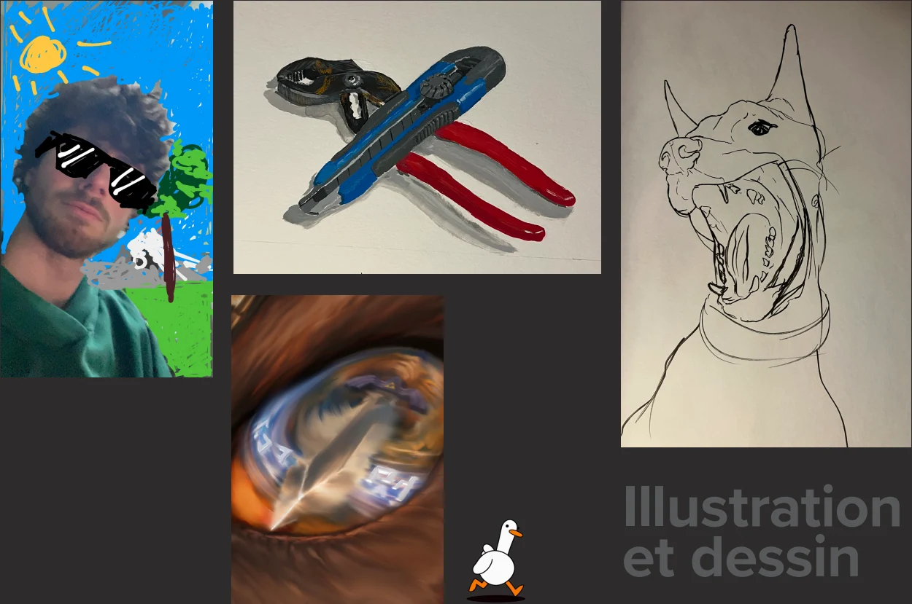
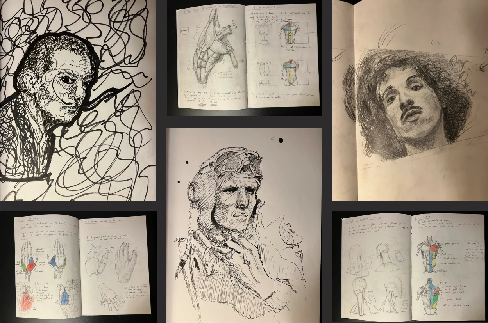
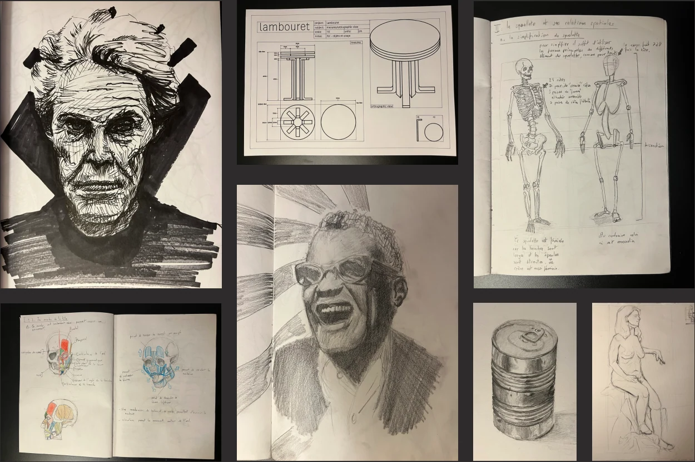

Illustration et dessin
Du dessin académique au dessin technique, en numérique et en traditionnel.

Je varie les méthodes, les médiums et les styles, du dessin académique au dessin technique, en numérique comme en traditionnel.
Dans cette série d’illustrations, l’espace et les différents éléments sont utilisés pour faire ressentir et accentuer la signification des titres de chaque image.


